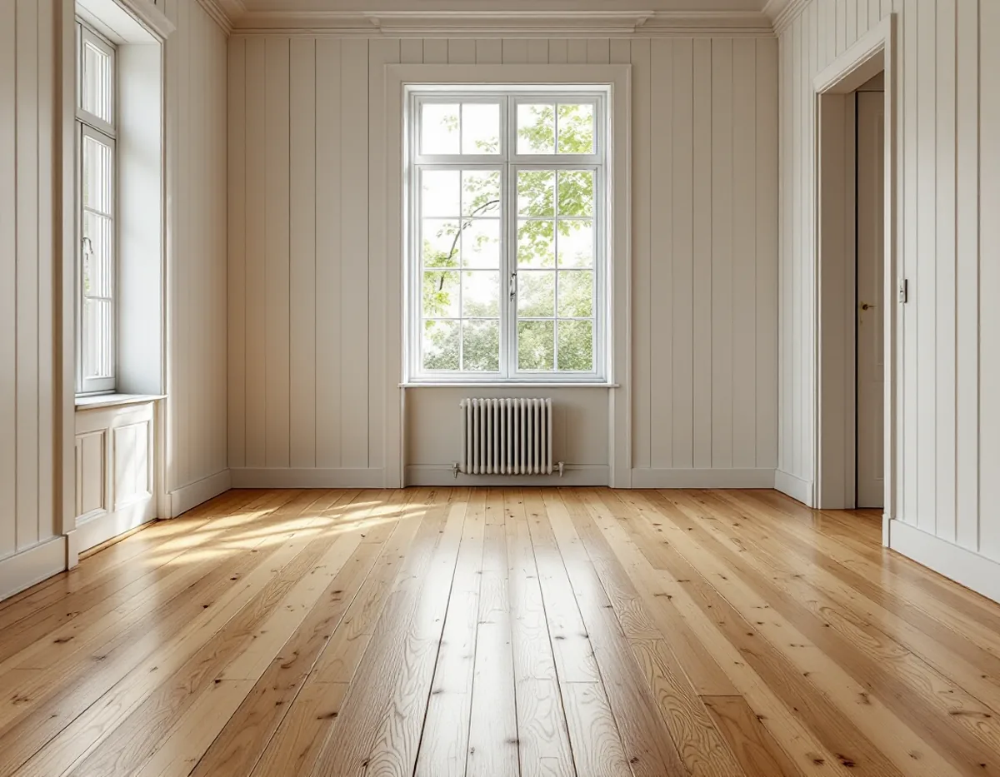
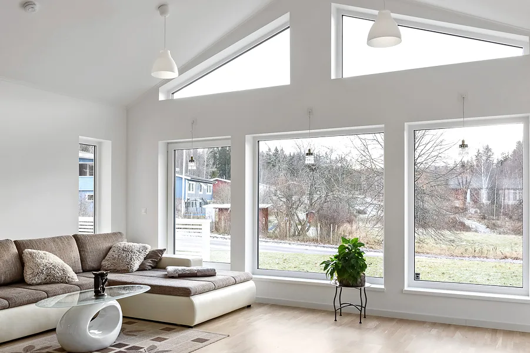
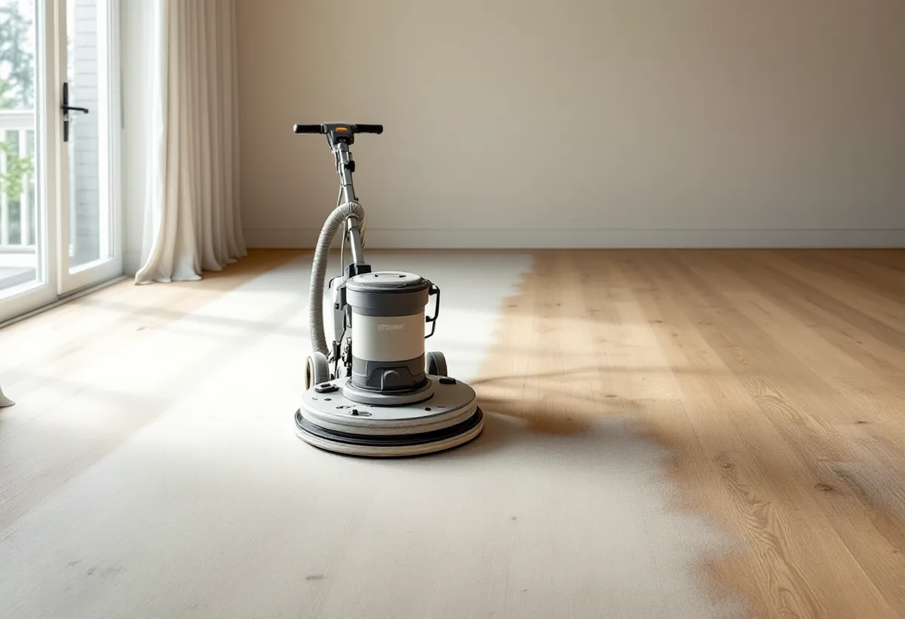

Platsbesök
Gratis besök där vi kontrollerar golv och slitskikt.
Villorna i Tullinge byggdes under hela 1900-talets första hälft, från kataloghus på 1920-talet till funkisvillor och folkhemmets typhus. Under gamla mattor och masonit ligger ofta trägolv som går att slipa fram igen. Geal Entreprenad AB slipar och behandlar golv i villor, radhus och lägenheter i Botkyrka.

Botkyrkas kulturmiljöprogram berättar att AB Separator anlade ett gjuteri vid Tullingesjöns sydspets kring sekelskiftet och att Tullinge järnvägsstation öppnade 1903. Det blev starten för villasamhället. På 1920-talet planlades egnahemsområdet Hamra egnahem söder om järnvägen för tjänstemän och arbetare på Separator, medan villaområdena norr om järnvägen, Tullinge Parkhem och Norra Tullinge Lanthem, byggdes ut vidare.
Under 1920-talet kom kataloghusen, monteringsfärdiga enfamiljshus som köptes direkt från en husleverantör. Boros villa Björkhamra blev populär i Tullinges egnahemsområde och finns väl representerad söder om järnvägen. På 1930- och 40-talen dominerade funkisvillan, och på 1950-talet lanserades Folkvillan och Tjänstemannavillan.

Byggnadsvårdsföreningen svarar i en fråga om en villa från 1920 där en linoleummatta från 1943 togs bort och mörkfernissade trägolv kom fram, med breda tiljor i hallen och smalare brädor i övriga rum. Vissa golv var spikade med mängder av spik, och föreningens förklaring var att golvet förmodligen täckts med masonit och linoleum, därav alla spikar.
Golvbranschens riktlinjer SLIP 22 säger att spikar ska tas bort före slipningen. De kan förstöra slippappret och orsaka gnistor med risk för dammexplosion i slipdammpåsen. Vi drar därför alla spikar och sänker de spikhuvuden som håller brädorna innan maskinen startas. Är golvet för skadat för att slipas finns golvläggare i Botkyrka.
Kulturmiljöprogrammet beskriver Fittja som en väl bevarad tunnelbanestadsdel från tidigt 1970-tal. Där uppfördes cirka 2 500 bostäder i början av 1970-talet, både i höghus, låghus och radhus. Programmet lyfter fram de höga punkthusen i 11–12 våningar som ett utmärkande drag.
Golvet i en lägenhet kan vara massivt trä, parkett eller ett lamellgolv, och skillnaden syns inte självklart ovanifrån. SLIP 22 påminner om att golv med ett slitskikt tunnare än 1 millimeter, laminat och fabrikslackerade golv som är EB-härdade inte går att slipa, även om de liknar ett trägolv. Vi kontrollerar därför slitskiktet med en kniv i en springa i ett hörn innan vi lämnar förslag.
Slutslipningen ska enligt SLIP 22 motsvara bandmaskin med korn 100 för barrträ, som furu, och korn 120 för lövträ, som ek och björk. Mönster som fiskben slipas först diagonalt och sedan i rummets längdriktning. Riktlinjerna påpekar också att damm från ek och bok är cancerframkallande, och slipningen görs därför med dammavskiljare och andningsskydd av klass P3.
Före ytbehandlingen mäter vi fukten. Golvet ska inte behandlas när den relativa fuktigheten inomhus ligger utanför 30–60 procent eller när fuktkvoten i träet ligger utanför 6–10 procent. Ett furugolv i ett kataloghus kan få lut, såpa, olja eller lack, beroende på hur huset används. Mer om tjänsten finns under golvläggning och golvslipning.

Gratis besök där vi kontrollerar golv och slitskikt.
Spikar dras, lösa delar limmas, lister lossas.
Korn 36–50 tar bort gammal yta.
Korn 60–80 tar bort sliprepor.
Kanter och yta får samma struktur.
Lut, såpa, olja eller lack efter fuktmätning.
Skatteverket räknar det som rotarbete att slipa och byta golv i ett småhus. I en bostadsrätt gäller avdraget när arbetet görs innanför lägenhetens tak, väggar och golv och golvet är ditt ansvar enligt stadgarna. Är bostaden yngre än fem år får arbetet bara återställa det ursprungliga skicket.
Avdraget är högst 30 procent av arbetskostnaden och högst 50 000 kronor per person och år. Material och resor ger inget avdrag, och Geal drar avdraget direkt på fakturan.
Golvytan, hur många spikar och gamla limrester som ska bort, om lösa brädor eller stavar måste limmas, träslag och mönster och vilken ytbehandling du väljer. Efter ett gratis platsbesök får du ett skriftligt kostnadsförslag.
Parkett, trägolv, klinker och slipning.
Golvläggning i Stockholm →Takbyte, takbesiktning och plåtarbeten.
Takläggare i Botkyrka →Tullinge, Uttran och Tumba.
Takrenovering i Botkyrka →Kartlagren, checklistan och vattnet.
Attefallshus i Botkyrka →Flytt av badrum, stammar och frånluft.
Badrumsrenovering i Botkyrka →Nytt hus, utfart och byggarbetsplats.
Byggföretag i Botkyrka →Tullinges villor och kulörbytet.
Fasadmålning i Botkyrka →Tegel, trä och puts från efterkrigstiden.
Fasadrenovering i Botkyrka →Fönstertyper per epok i Botkyrkas villor.
Fönsterbyte i Botkyrka →Radhusen i Tuna.
Fönsterrenovering i Botkyrka →Kataloghus, källargolv och trägolv.
Golvläggare i Botkyrka →Kök i villor och radhus, för att bo kvar.
Köksrenovering i Botkyrka →Tidstypiska kulörer från 1960-tal till gamla byar.
Målare i Botkyrka →Rännor, stuprör och plåttak i Botkyrka.
Plåtslagare i Botkyrka →Altan, plank och förråd i villaområdena vid järnvägen.
Snickare i Botkyrka →Material, solpaneler och takkupor.
Takbyte i Botkyrka →Ny tapet på träfiberskivor och gamla lager.
Tapetsering i Botkyrka →Villorna i Tullinge, Uttran och kartan.
Tillbyggnad i Botkyrka →Tullingehuset i omgångar.
Totalrenovering i Botkyrka →